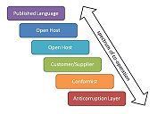
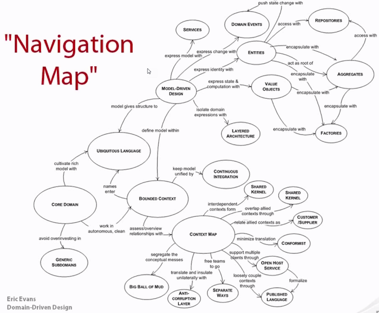

Domain Driven Design: Introduction¶
Domain Driven Design (DDD) is about trying to make your software a model of a real-world system or process. The philosophy of DDD is about placing our attention at the heart of the application, focusing on the complexity that is intrinsic to the business domain itself. In using DDD, you are meant to work closely with a domain expert who can explain how the real-world system works. It also acts as the conceptual foundation for the design of the software itself - how it’s broken down into objects or functions. In this blog post, I will cover the key elements of DDD.
Concepts¶
Domain¶
Domain: a sphere of knowledge or activity
Problem domain: the specific problem the software you’re working on is trying to solve.
Core domain: the key differentiator for the customer’s business something they must do well and cannot outsource.
We distinguish the core domain (unique to the business) from the supporting sub-domains (typically generic in nature, such as money or time), and place appropriately more of our design efforts on the core.
Model¶
With DDD we’re looking to create models of a problem domain.
A system of abstractions that describes selected aspects of a domain and can be used to solve problems related to that domain.
Context¶
Context: The setting in which a word or statement appears that determines its meaning.
Statements about a model can only be understood in a context.
Whenever we discuss a model it’s always within some context. This context can usually be inferred from the set of end-users that use the system.
Bounded Context¶
In those younger days we were advised to build a unified model of the entire business, but DDD recognizes that we’ve learned that “total unification of the domain model for a large system will not be feasible or cost-effective”
Bounded Context: A description of a boundary (typically a subsystem, or the work of a specific team) within which a particular model is defined and applicable. Every domain model lives in precisely one BC, and a BC contains precisely one domain model. BC is a specific responsibility, with explicit boundaries that separate it from other parts of the system.
Explicitly define the context within which a model applies…Keep the model strictly consistent within these bounds, but don’t be distracted or confused by issues outside. –Eric Evans
If we know there are two BCs interacting with each other, then we know we must take care to translate between the concepts in one domain and those of the other.
Difference between sub-domains & Bounded context:
- Sub-domain is a problem space concept.
- Bounded context is a solution space concept.
Ubiquitous language¶
Used throughout that context from conversations to code
Ubiquitous language per bounded context
For example, in the e-commerce system, the term customer must have multiple meanings. When a user is browsing the catalog, customer means one thing, but when a user is placing an order, it means something else.
Practices¶
Context Mapping¶
The process of identifying bounded contexts and their relationships to one another.
DDD suggests that we draw up a context map to identify our BCs and those on which we depend or are depended, identifying the nature of these dependencies
All this talk about context maps and BCs is sometimes called strategic DDD.
After all, figuring out the relationship between BCs is all pretty political when you think about it:
- which upstream systems will my system depend on,
- is it easy for me to integrate with them,
- do I have leverage over them,
- do I trust them?
And the same holds true downstream:
- which systems will be using my services,
- how do I expose my functionality as services,
- will they have leverage over me?
Misunderstand this and your application could easily be a failure.
Relationship between BCs¶
Published language: the interacting BCs agree on a common a language (for example a bunch of XML schemas over an enterprise service bus) by which they can interact with each other;
Open host service: a BC specifies a protocol (for example a RESTful web service) by which any other BC can use its services;
Shared kernel: two BCs use a common kernel of code (for example a library) as a common lingua-franca, but otherwise do their other stuff in their own specific way;
Customer/supplier: one BC uses the services of another and is a stakeholder (customer) of that other BC. As such it can influence the services provided by that BC;
Conformist: one BC uses the services of another but is not a stakeholder to that other BC. As such it uses “as-is” (conforms to) the protocols or APIs provided by that BC;
Anti-corruption layer: one BC uses the services of another and is not a stakeholder, but aims to minimize impact from changes in the BC it depends on by introducing a set of adapters – an anti-corruption layer.
Anemic and Rich Domain Models¶
Anemic Domain Model: Model with classes focused on state management. Good for CRUD.
Rich Domain Model: Model with logic focused on behavior, not just state Preferred for DDD
Building blocks¶
Entity¶
A mutable class with an identity (not tied to it’s property values) used for tracking and persistence.
Value Objects¶
An immutable class whose identity is dependent on the combination of its value
- Measures, quantifies, or describes a thing in the domain
- Identity is based on composition of values
- Immutable
- Compared using all values
- No side effects
It may surprise you to learn that we should strive to model using Value Object instead of Entities wherever possible.
Value Objects are a really good place to put methods and logic … a better place than entities. – Eric Evans
Domain Services¶
Important operations that don’t belong to a particular Entity or Value Object
Good Domain Services: * Not a nature part of an Entity or Value Object * Have an interface defined in terms of other domain model elements * Are stateless (but may have side effects)
Aggregate¶
Aggregate is a domain pattern used to define object ownership and boundaries.
An aggregate is a cluster of associated objects that we treat as a unit for the purpose of data changes.
Tips:
- Aggregates can connect only by the root
- Ref object to another object by using id can avoid cascading change problem.
- Don’t overlook using FKs for non-root entities. Too many FKs to non-root entities may suggest a problem
- Rule of cascading deletes: If the root is deleted and removed from memory, all the other objects from the aggregate will be deleted too, because there is no other object holding reference to any of them.
- It is possible for the root to pass transient references of internal objects to external ones, with the condition that the external objects do not hold the reference after the operation is finished. One simple way to do that is to pass copies of the Value Objects to external objects.
Repository¶
Repository is to find and update existing objects which can use a factory to create its objects.
Repository can also handle persistence.
A repository represents all objects of certain type as a conceptual set… like a collection with more elaborate querying capability
Repository, the purpose of which is to encapsulate all the logic needed to obtain object references.
The domain objects won’t have to deal with the infrastructure to get the needed references to other objects of the domain. They will just get them from the Repository and the model is regaining its clarity and focus.
Domain event¶
An object that is used to record a discrete event related to model activity within the system.
While all events within the system could be tracked, a domain event is only created for event types which the domain experts care about.
Benefits and Drawbacks of DDD¶
Benefits of DDD:
- Flexible
- Customer’s vision/perspective of the problem
- Path through a very complex problem
- Well-organized and easily tested code
- Business logic lives in one place
- Many great patterns to leverage
Drawbacks of DDD:
- Time and Effort
- Discuss & model the problem with domain experts
- Isolate domain logic from other parts of application
- Learning curve
- New principles
- New patterns
- New processes
- Only makes sense when there is complexity in the problem
- Not just CRUD or data-driven applications
- Not just technical complexity without business domain complexity
- Team or Company Buy-in to DDD
Reference¶
Web sites:
- Domainlanguage.com
- http://dddcommunity.org/
Navigation Map:
Written by Binwei@Gdynia